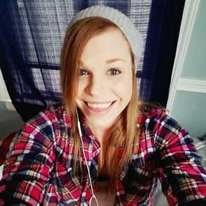

It hijacks the brain and we need to arrest the addiction, not the person…to help stop the progression of the disease without stigmatizing the person as bad, but suffering from mental illness that addiction brings, by chemically altering the brains structure. The brain gets hijacked and wired only to seek what it now believes it lacks to be normal. The brain stops making serotonin and dopamine on its own and craves the opiates to feel well and not get sick. An addictive brain is a diseased brain and not a moral failure on the one suffering from addiction, but by a society/government that has failed morally to protect our citizens and loved ones from the profiteers of prescription drugs who have dirty hands in this epidemic.
We lost our morality and compass when we allowed profit over human lives. Stop the prescribing of these opiates to children/adults that are not in chronic pain. The FDA needs to be held accountable for their poor judgment of allowing these powerful opiates to be prescribed and for not stopping the many deaths this epidemic has caused by heroin addiction due to big pharma.
…My son died -- the unidentified young face of addiction that stopped Times Square the morning of April 12, 2013. He relapsed and fell into the subway and was electrocuted by the third rail. It was not suicide or anything other than another beautiful son/daughter losing their battle with addiction and the heartless society that shames them.
Katie from Macomb Township in Michigan
The stigma needs to be removed. It can happen to any family, regardless of social status. These aren't junkies in the street... these are your neighbors, the quarterback, our own children. Opioid addiction has been classified as a brain disease and the rate of relapse is extremely high.
Trisha from Mount Laurel, N.J.
That initially you made a choice to try it, but after that it becomes a disease. So many people need to really educate themselves on addiction. As a family member I have seen close family members and friends try it once and go down that dark path after. Once you're addicted you're hooked. Do you think addicts want to live on the street? Panhandle? Shoplift? Not have their family and friends' support? Feel less than? Not be able to get help through funding, etc.? I don't think so. I myself have never used drugs, however, I know it's a disease. I've lived through it with my family/friends, once we stop the stigma and really try and understand and educate ourselves then we can help the matter and not cause more harm. Why not be apart of the solution and not the problem?
Trina from San Francisco
My boyfriend died of a heroin overdose on October 30, 2015. I wish they knew that doctors are creating addictions by prescribing irresponsibly high doses of opioids for extreme periods of time to patients with chronic pain who have nowhere else to turn. That the profile of an addict is much broader than most people perceive and can often be that seemingly functioning, well-respected professional you know and work with. That the jump from prescribed opiates to heroin isn't as far as you think. That addiction is a disease with emotional and physical aspects and not something most people can overcome through sheer willpower. That the disease lies. That getting someone into treatment can't necessarily save them and relapse is almost certain. That no matter how much an addict loves you, they love the drug more. And that even though your brain knows you can't save an addict and that what happens to them as a result of their addiction isn't your fault, it takes a very long time for your heart to know that.
Scott, after a back surgery
I was at a point where I lost my boat and second home, had spent way too much money, and I was in a vicious cycle of trying to quit and then relapsing to avoid the withdrawal symptoms. I decided I needed help.
My wife knew I was struggling but also was having a hard time dealing with the struggle of having an addicted husband. Our house and my family were on the line, and I knew I needed to find a doctor to help me.
I was sick and tired of being sick and tired.
Kerry from Shingletown, Calif. who lost a daughter
It can and will kill you. My beautiful 25-year-old daughter who had a three-year-old daughter of her own died from just wanting to get high. She died in a public restroom in the local casino. Now I'm raising my beautiful granddaughter and trying to comfort her when she doesn't understand why mama isn't coming home.
Sarah who overcame her addiction
That it's a public/mental health disease, it's not about being a bad person or morally weak. I also want people to know that with proper long-term treatment it's possible to recover and live a beautiful life. I feel incredibly fortunate to have my recovery of almost 6 years and to have my life back.
Jacob in Chicago
It's not something you want to happen to you. I had a great life, goals, asspirations, but once I tried heroin I became a slave to getting high.

Cassie from Cleveland
I got back into a program of recovery and life has been pretty darn good ever since.
Someone who became addicted to opioids in San Jose
I wish people understood that it's not as simple as "just stop!" Addiction to pain medication happened quickly for me and I was so ashamed to admit it. I wish drug addiction was not such a stigma. Being addicted to alcohol is the same thing, yet alcoholism seems much more "socially acceptable" if that makes sense?
Trish from Round Rock, Texas
That it is a disease that my son has! He has died once and has stopped breathing at least 10 times in my home and continues to use heroin! Either me (his mom) or his dad or brother have performed CPR until paramedics came, [and] he continued to use after that. We are traumatized, our family is not the same, never will be! Five treatment centers later and he lives thousands of miles away but he still fights this demon!
A family member of an addict in Alabama
It is difficult to watch for 15 years, a family member struggle and TRY to overcome it. They are now on methadone. Plus it is self-sacrificing and expensive to try to keep the family member fed, sheltered and from committing crimes.
Evelyn from Seattle
That there is so much more to life than the life a drug addict lives. I think they don't always see that. That even family members can cause you life-erupting pain, and how important it is to face them with compassion (although it is okay to be angry too). That I have lost half of my friends and my sister to heroin addiction and that AA and Al-Anon works if you work the program. That even though I live half way across the world now, and have no control over what is happening at home, I still feel the pain everywhere in my body when I think about my sister and all my friends whom I haven't spoken with in months. When I think of Seattle where I have lived the first 19 years of my life, the thought of returning home doesn't appeal anymore. When I think of home, I see a dark cloud of anger and pain and people I miss dearly, the constant dark clouds over Seattle have become so much worse than only the stereotypical weather. When I picture Seattle now I picture Pan's Labyrinth, a dark and twisted place that I have no desire to re-enter anytime soon.
Margaret from Richmond, Va.
How hard it is to get off and stay clean because your own body and mind are at war with themselves.
Andrew from Everett, Wash.
I don't know why I keep doing it, or why I keep going back. I hate being on methadone but I don't rob, cheat, and steal... so why am I still a problem. I just feel like I can't win.
A former OxyContin patient
Valerie, who provides addiction treatment
If I had the same experiences of trauma, hurt, pain, emptiness, neglect, hunger and poverty that people who live with addiction had -- I hope that I could cope half as well as they do. I hope I would have the same strength and resiliency that they do. But I can't say for sure that I would. Despite what life has given people who live with addiction, they have prevailed to the best of their abilities. If YOU were to have the same life experiences as people who live with addiction -- I hope that you would have the strength to prevail too.
Stories provided by FrontLine. For more stories, visit PBS.org